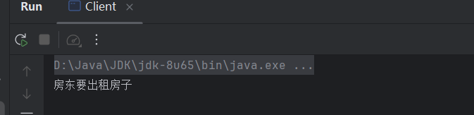
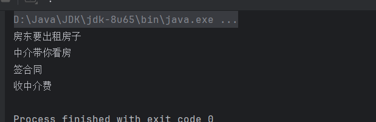
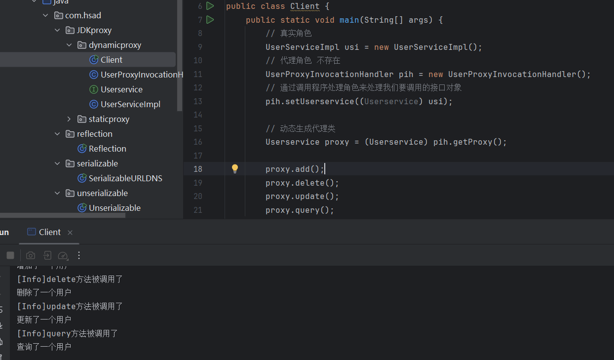

Java代理模式
代理模式是一种比较好理解的设计模式。简单来说就是 我们使用代理对象来代替对真实对象(realobject)的访问，这样就可以在不修改原目标对象的前提下，提供额外的功能操作，扩展目标对象的功能。
代理模式的主要作用是扩展目标对象的功能，比如说在目标对象的某个方法执行前后你可以增加一些自定义的操作。
举个例子：新娘找来了自己的姨妈来代替自己处理新郎的提问，新娘收到的提问都是经过姨妈处理过滤之后的。姨妈在这里就可以看作是代理你的代理对象，代理的行为（方法）是接收和回复新郎的提问。
又或是买房时的房产中介代替房东来处理你的买房需求
静态代理
静态代理中，我们对目标对象的每个方法的增强都是手动完成的，非常不灵活（比如接口一旦新增加方法，目标对象和代理对象都要进行修改）且麻烦(需要对每个目标类都单独写一个代理类）。实际应用场景非常非常少，日常开发几乎看不到使用静态代理的场景。
上面我们是从实现和应用角度来说的静态代理，从 JVM 层面来说， 静态代理在编译时就将接口、实现类、代理类这些都变成了一个个实际的 class 文件。
静态代理实现步骤:
- 定义一个接口及其实现类；
- 创建一个代理类同样实现这个接口
- 将目标对象注入进代理类，然后在代理类的对应方法调用目标类中的对应方法。这样的话，我们就可以通过代理类屏蔽对目标对象的访问，并且可以在目标方法执行前后做一些自己想做的事情。
这里以租客找中介向房东租房为例
Rent.java：这是一个Java接口 可理解为房源 该类有一个方法Rent()为租房
package com.hsad.proxy;
// 租房接口
public interface Rent {
public void rent();
}Host.java：这是房东类 作为房东需要实现Rent.java的接口并实现Rent()方法
package com.hsad.proxy;
public class Host implements Rent{
@Override
public void rent(){
System.out.println("房东要出租房子");
}
}Proxy.java：这是中介类 也就是代理，他需要有房东的房源，然而我们通常不会继承房东，而会将房东作为一个私有的属性host，我们通过host.rent()来实现租房的方法。
package com.hsad.proxy;
// 中介
public class Proxy {
private Host host;
public Proxy(){}
public Proxy(Host host){
this.host = host;
}
public void rent(){
host.rent();
}
}Client.java：这是一个启动类，这个类其实就是租客，租客的想法也很简单，就是找到中介，然后租房
package com.hsad.proxy;
public class Client {
public static void main(String[] args) {
Host host = new Host();
Proxy proxy = new Proxy(host);
proxy.rent();
}
}
到这里按理来说 看房流程就结束了 不过这里只打印了房东要出租房子那既然这样为什么不直接找房东 所以这时候中介的作用就来了
有一些行为是中介可以做的，而房东不能做的，比如看房，收中介费等等。所以我们要在 Proxy.java 当中实现这些功能。
改进Proxy.java
package com.hsad.proxy;
// 中介
public class Proxy {
private Host host;
public Proxy(){}
public Proxy(Host host){
this.host = host;
}
public void rent(){
host.rent();
seeHouse();
contract();
fare();
}
public void seeHouse(){
System.out.println("中介带你看房");
}
public void contract(){
System.out.println("签合同");
}
public void fare(){
System.out.println("收中介费");
}
}
优点：
- 可以使得我们的真实角色更加纯粹 . 不再去关注一些公共的事情 .
- 公共的业务由代理来完成 . 实现了业务的分工 ,
- 公共业务发生扩展时变得更加集中和方便 .
缺点 :
- 一个真是类对应一个代理角色，代码量翻倍，开发效率降低 .
- 以此例来说 如果每个中介的话术不同 中介费用不同岂不是每个中介都要特定写个类
我们想要静态代理的好处，又不想要静态代理的缺点，所以 , 就有了动态代理 !
动态代理
一些基础知识
- 动态代理的角色和静态代理的一样。需要一个实体类，一个代理类，一个启动器。
- 动态代理的代理类是动态生成的，静态代理的代理类是我们提前写好的。
在 Java 动态代理机制中 InvocationHandler 接口和 Proxy 类是核心。
Proxy 类中使用频率最高的方法是：newProxyInstance() ，这个方法主要用来生成一个代理对象。
public static Object newProxyInstance(ClassLoader loader,
Class<?>[] interfaces,
InvocationHandler h)
throws IllegalArgumentException
{
......
}这个方法一共有 3 个参数：
- loader :类加载器，用于加载代理对象。
- interfaces : 被代理类实现的一些接口；
- h : 实现了
InvocationHandler接口的对象；
要实现动态代理的话，还必须需要实现InvocationHandler 来自定义处理逻辑。 当我们的动态代理对象调用一个方法时，这个方法的调用就会被转发到实现InvocationHandler 接口类的 invoke 方法来调用。
public interface InvocationHandler {
/**
* 当你使用代理对象调用方法的时候实际会调用到这个方法
*/
public Object invoke(Object proxy, Method method, Object[] args)
throws Throwable;
}invoke() 方法有下面三个参数：
- proxy :动态生成的代理类
- method : 与代理类对象调用的方法相对应
- args : 当前 method 方法的参数
也就是说：你通过Proxy 类的 newProxyInstance() 创建的代理对象在调用方法的时候，实际会调用到实现InvocationHandler 接口的类的 invoke()方法。 你可以在 invoke() 方法中自定义处理逻辑，比如在方法执行前后做什么事情
JDK 动态代理类使用步骤
- 定义一个接口及其实现类；
- 自定义
InvocationHandler并重写invoke方法，在invoke方法中我们会调用原生方法（被代理类的方法）并自定义一些处理逻辑； - 通过
Proxy.newProxyInstance(ClassLoader loader,Class<?>[] interfaces,InvocationHandler h)方法创建代理对象；
代码实现
UserService.java：接口类
package com.hsad.JDKproxy.dynamicproxy;
public interface Userservice {
public void add();
public void delete();
public void update();
public void query();
}
UserServiceImpl.java：用实体类实现抽象类
package com.hsad.JDKproxy.dynamicproxy;
public class UserServiceImpl implements Userservice{
@Override
public void add() {
System.out.println("增加了一个用户");
}
@Override
public void delete() {
System.out.println("删除了一个用户");
}
@Override
public void update() {
System.out.println("更新了一个用户");
}
@Override
public void query() {
System.out.println("查询了一个用户");
}
}
UserProxyInvocationHandler.java：动态代理实现类
package com.hsad.JDKproxy.dynamicproxy;
import java.lang.reflect.InvocationHandler;
import java.lang.reflect.Method;
import java.lang.reflect.Proxy;
public class UserProxyInvocationHandler implements InvocationHandler {
// 代理的接口
private Userservice userservice;
public void setUserservice(Userservice userservice) {
this.userservice = userservice;
}
// 动态生成代理类实例
@Override
public Object invoke(Object proxy, Method method, Object[] args) throws Throwable {
log(method);
Object result = method.invoke(userservice, args);
return result;
}
// 代理类的日志方法
public void log(Method method) {
System.out.println("[Info]" + method.getName() + "方法被调用了");
}
}
Client.java：启动类
package com.hsad.JDKproxy.dynamicproxy;
import com.hsad.JDKproxy.dynamicproxy.UserServiceImpl;
import com.hsad.user.User;
public class Client {
public static void main(String[] args) {
// 真实角色
UserServiceImpl usi = new UserServiceImpl();
// 代理角色 不存在
UserProxyInvocationHandler pih = new UserProxyInvocationHandler();
// 通过调用程序处理角色来处理我们要调用的接口对象
pih.setUserservice((Userservice) usi);
// 动态生成代理类
Userservice proxy = (Userservice) pih.getProxy();
proxy.add();
proxy.delete();
proxy.update();
proxy.query();
}
}

在反序列化中动态代理的作用
动态代理在反序列化当中的利用和 readObject 是异曲同工的。
readObject 方法在反序列化当中会被自动执行。
而 invoke 方法在动态代理当中会自动执行。